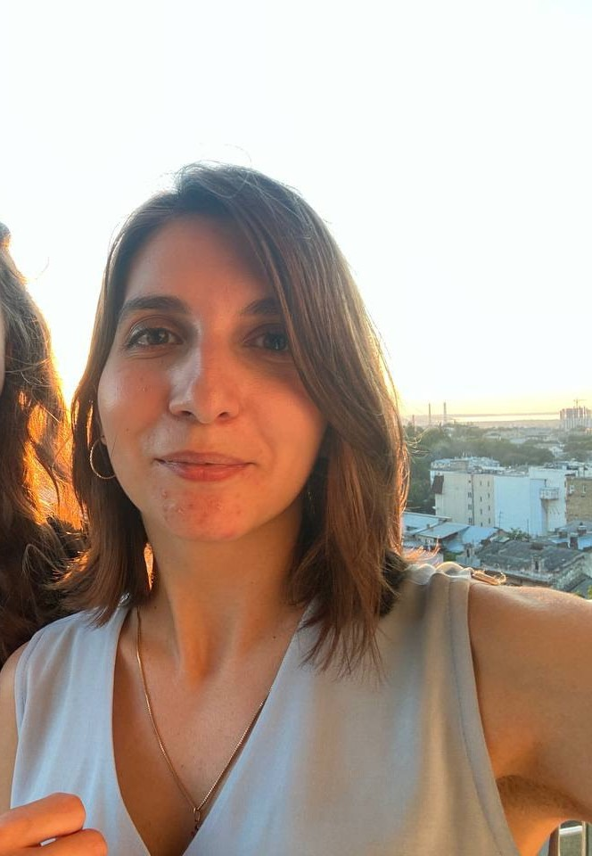

Stanislava Netrebenko
Junior Front-End Developer
Summary
An enthusiastic front-end developer from Odesa, Ukraine is looking for either an internship or an entry-level junior position to enhance
hard-n-soft skills in a collaborative team environment and assisst in complex troubleshooting problems. Previously worked as a professional translator and a text analyst.
Working Experience
- 2017 - present
- Military translator at a government instutution.
- February 2015 - October 2016
- One-two month practice as assistant teacher on English and French language and literature in various educational institutions.
Education & Courses
- November 2022 - May 2023
- Front-End Development by Robotdreams
- August 2020 - March 2021
- Responsive Web Design Certification on Freecodecamp with some projects
- September 2011 - December 2016
- Master's degree with the qualification of Philologist, the English and French languages and literatures teacher.
Skills
- HTML
- CSS
- Javascript
- Python
Languages
- English
- French
- Greek